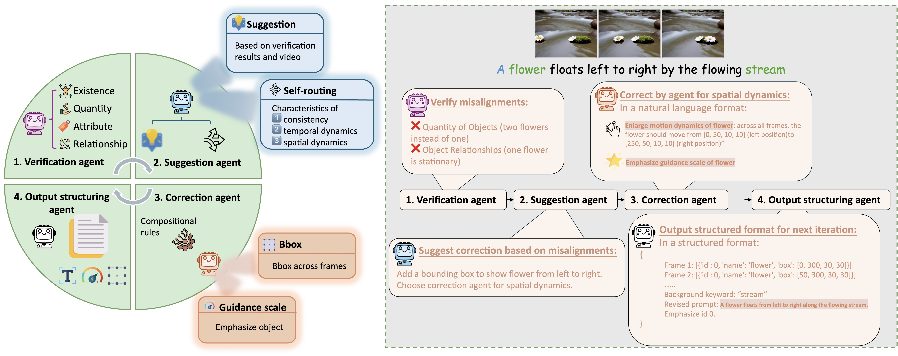
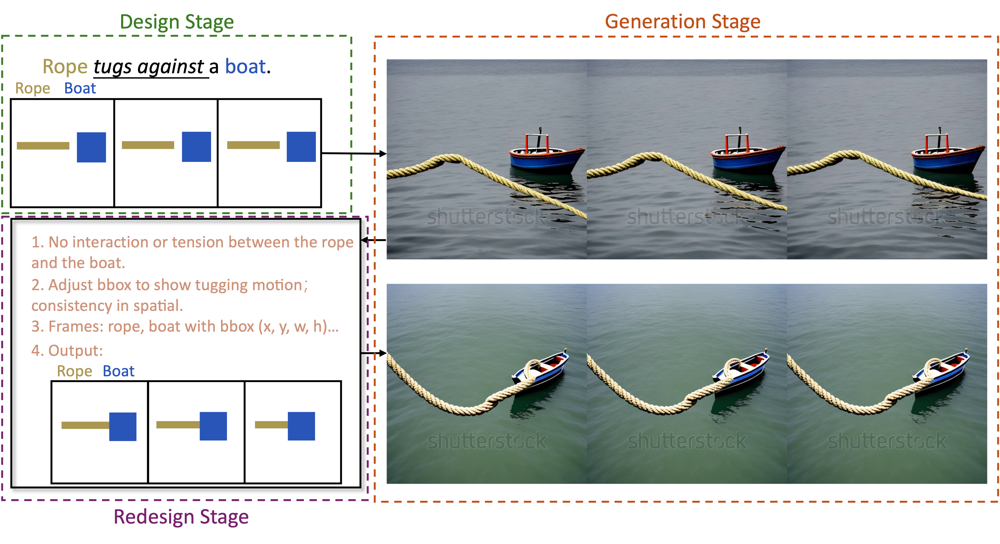
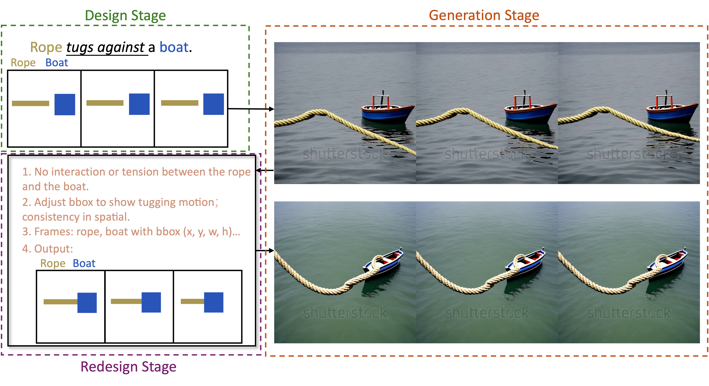

Text-to-video generation models have shown significant progress in the recent years. However, they still struggle with generating complex dynamic scenes based on compositional text prompts, such as attribute binding for multiple objects, temporal dynamics associated with different objects, and interactions between objects. Our key motivation is that complex tasks can be decomposed into simpler ones, each handled by a role-specialized MLLM agent. Multiple agents can collaborate together to achieve collective intelligence for complex goals. We propose GenMAC, an iterative, multi-agent framework that enables compositional text-to-video generation. The collaborative workflow includes three stages: Design, Generation, and Redesign, with an iterative loop between the Generation and Redesign stages to progressively verify and refine the generated videos. The Redesign stage is the most challenging stage that aims to verify the generated videos, suggest corrections, and redesign the text prompts, frame-wise layouts, and guidance scales for the next iteration of generation. To avoid hallucination of a single MLLM agent, we decompose this stage to four sequentially-executed MLLM-based agents: verification agent, suggestion agent, correction agent, and output structuring agent. Furthermore, to tackle diverse scenarios of compositional text-to-video generation, we design a self-routing mechanism to adaptively select the proper correction agent from a collection of correction agents each specialized for one scenario. Extensive experiments demonstrate the effectiveness of GenMAC, achieving state-of-the art performance in compositional text-to-video generation.
Highlight:
Overview of GenMAC. (1) Collaborative workflow includes three stages with an iterative loop: Design, Generation, and Redesign. (2) Task decomposition decomposes the redesign stage into four sub-tasks, handled by four agents. (3) Self-routing mechanism allows for adaptive selection of suitable correction agent to address the diverse requirements for compositional text-to-video generation.
Illustration of the allocation of roles in the Redesign stage: verification agent, suggestion agent, correction agent, and output structuring agent within a sequential task breakdown, highlighting the clear responsibilities of each agent.
Examples of GenMAC. Multi-agent collaboration and iterative refinement improves scene accuracy and text alignment.

 
